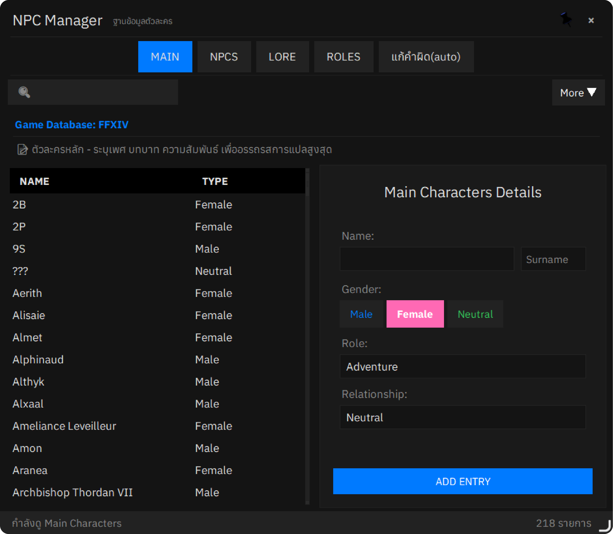

NPC + Translation
NPC Manager (3 tabs + Polaroid + Cloud Sync), Translation Engine (Gemini prompt v2, 3-layer name preservation), Wide-Context system, NPC Database state, zero-width safety.
NPC Manager
PyQt6 panel ใน pyqt_ui/npc_manager_panel.py. แก้ไข npc.json ขณะแอปกำลังแปล — propagate อัตโนมัติผ่าน on_save_callback.

3 Tabs: MAIN / NPCS / LORE
- Personality inline ใน MAIN —
character_roles[firstName]editable เป็นQTextEditระหว่าง Name และ Gender - WORD FIX tab hidden —
setVisible(False). word_fixes deprecated (ดู Database) - ROLES tab merged into MAIN (v1.7.9)
Polaroid Avatar View (v1.8.2)
คลิก avatar → _PolaroidCard overlay (~400×510px) ใน details panel. แสดงรูปเต็ม (top-cropped) + firstName ในฟอนต์ Caveat handwriting.
Hover-revealed: "📷 เปลี่ยนภาพ" pill (top-right) + "✕" delete (bottom-right).
UX Flows
🟢 Empty avatar
Click ไปที่ file picker เลย — skip empty Polaroid
📸 With image
Click → Polaroid เปิด → "เปลี่ยนภาพ" → file picker → upload เสร็จ Polaroid auto-reopens
✕ Dismiss
Click outside · Resize window · ESC → ปิดทันที
Critical Polaroid Patterns (กว่าจะลงตัวต้องลองหลายรอบ)
(QTBUG-56081) Action buttons ต้องเป็น siblings ของ _PolaroidCard (children ของ overlay) ไม่ใช่ children ของ card.
QGraphicsDropShadowEffect rasterizes ALL descendants รวมกัน — children-of-shadow ติด bounding rect ใน shadow pass ก่อน QSS border-radius clip → leak square ghosts.
Panel-level QSS subtree cascade override setFont(). Bulletproof workaround: pre-render ชื่อเป็น QPixmap ผ่าน QPainter.drawText (ใช้ QFont ตรง) แล้ว label.setPixmap(pm). ดู _render_name_pixmap.
Polaroid call QFontDatabase.addApplicationFont() ตัวเอง (idempotent) เพราะ QtFontManager lazy.
ใช้ timer-based geometry polling (60ms) ไม่ใช่ Enter/Leave events. Cursor ผ่าน sibling button → Leave on card → hide buttons → cursor on card → Enter → show buttons → loop. Geometry poll หลีกเลี่ยง loop นี้.
App-level eventFilter install เฉพาะตอน overlay visible. ฟัง top-level Resize + MouseButtonPress outside overlay rect.
Avatar Hover Menu (v1.8.7)
Hover-revealed action menu เมื่อมีตัวละครถูก select:
- เลือกภาพจากไฟล์ (icon
images.png) — file picker - ถ่ายภาพจอ (Screenshot) (icon
camera.png) — fullscreen capture + crop
_MainTab เช็ค cursor position ทุก 80ms. Show เมื่อ cursor ใน avatar OR menu rects; close หลัง 180ms grace.
Avatar set_force_hover(bool) เก็บ accent border คงที่ตอน menu เปิด (Qt fires spurious leaveEvent เมื่อ popup grab mouse focus).
Screenshot Tool
pyqt_ui/screenshot_tool.py — สำหรับ avatar capture เท่านั้น (ไม่ใช่ general screen-area detection — legacy นั้นถูก purge ไปแล้ว).
Flow
- Hide NPC Manager → 120ms wait →
QScreen.grabWindow(0)on screen panel currently on (QGuiApplication.screenAt(panel center)) ScreenshotCropOverlay: 60% black mask + punched-out crop rect (QPainterPathsubtract) + 2px cyan#00d4ffborder + 8 handles- Click-drag select, min 32×32, HiDPI-aware (
devicePixelRatioscaling) - ENTER or double-click → emit
crop_confirmed(QPixmap)→ save temp PNG →dm.set_main_character_image()→ 512 WebP → restore panel + reopen Polaroid - ESC → cancel → restore panel only
WA_DeleteOnClose ปล่อย ~10MB pixmap ทันที. try/except รอบ overlay construction (panel restore ตอน fail).
Avatar Storage — 512 WebP
npc_data_manager.set_main_character_image() default size=512, format WebP quality=88, alpha preserved.
| Property | Old | New (v1.8.2+) |
|---|---|---|
| Resolution | 128 PNG | 512 WebP |
| File size (y_shtola) | 503 KB | 56 KB ~89% smaller |
| Visual quality | blurry at 360 logical px | indistinguishable |
| Extension | .png | .webp |
- Re-upload ลบ legacy
.pngเพื่อไม่ให้มี orphan - Polaroid no-upscale guard:
target_logical = min(IMAGE_AREA, source_min_dim)— รูป 128px เก่าแสดง letterboxed, ไม่ blurry-upscale ไป 360
Header (live status)
Live counts + file mtime: main 218 · npcs 65 · lore 139 · อัปเดต X นาทีที่แล้ว. Refreshed on init/autosave/reload + 60s QTimer.
_format_relative_time(ts):
| Condition | Output |
|---|---|
| <60s | "เมื่อสักครู่" |
| <60m | "X นาทีที่แล้ว" |
| <24h | "X ชม.ที่แล้ว" |
| <7d | "X วันที่แล้ว" |
| else | absolute date |
Manual ↻ reload button — re-read npc.json + propagate via on_save_callback (translator + text_corrector + caches).
Toast: "✓ บันทึก · ใช้ในการแปลทันที" เมื่อ MBB attached.
Pin Button
Default _is_pinned = True (matches WindowStaysOnTopHint at init).
Hybrid Qt + Win32 _apply_topmost:
setWindowFlagkeeps Qt's internal model in sync- Win32
SetWindowPos(HWND_TOPMOST/NOTOPMOST)enforces z-order without unmap+remap flicker
Cloud Sync (v1.8.9, Phase A)
Cherry-pick merge UX จาก cloud-hosted npc.json — แชร์ database update ระหว่างผู้ใช้
Cloud Repo Structure
Public repo: iarcanar/MBB_NPCData (plaintext, no encryption — Phase A)
Publish Workflow
scripts/build_npc_release.py:
- Reads local
python-app/npc.json→ stats + sha256 - 2-commit flow: push data → download จาก raw URL เพื่อได้ authoritative sha256 (CDN LF-normalization workaround) → generate manifest → push
--dry-run,--notes "..."flags
MBB Side — npc_cloud_sync.py
check_for_update(local_version) → UpdateCheckResult # dataclass drives UI state
download_and_verify(manifest) # sha256 mismatch raises
# Accept-Encoding: identity (bypass auto-decompression that skews sha256)
# Cache manifest to %LOCALAPPDATA%/MBB_Dalamud/cloud_cache/UI Integration
Unified action group — Import data + Cloud Sync buttons แชร์ 1 border-radius + 1px divider.
Click flow: check → confirm dialog → download → existing _MergeDialog cherry-pick UI
Settings persistence: QSettings("MBB", "NPCManager") — cloud_sync.last_version + last_check_at
Cross-thread results marshaled via pyqtSignal (auto-queued connection).
QTimer.singleShot(0, ...) from worker thread silently no-ops — timer fires on calling thread, ไม่ใช่ UI thread.
Roadmap
- Phase A.5 — auto-check on startup (deferred — release cadence validates UX ก่อน)
- Phase B — encryption + private repo
- Phase C — paid tier gate
Merge Modal (v1.8.4)
_MergeDiff class — additive diff across 4 sections (main_characters, npcs, lore, character_roles). Never deletes.
- Identity:
(firstName, lastName)lower for main;namelower for npcs; key for dicts - Skips:
word_fixes+_game_info
_MergeDialog — frameless 760×660, 2px accent border:
- Top: 2 file cards (BASE | TARGET) with mtime arrows
↑↓= - Body: scroll diff with checkbox + NEW/CHG badge
- Footer: Cancel / "Merge ที่เลือก (N)"
Audit Guards
MAX_NPC_BYTES = 50MBcap beforejson.loaddlg.deleteLater()afterexec()_apply_diffisinstance hardening (reset to{}/[]ถ้า type mismatches)
Translation Engine
translator_gemini.py — Gemini API + custom prompt system.
System Prompt Versions
| Flag | Method | Tokens | State |
|---|---|---|---|
False (default) | get_rpg_general_prompt() v2/v3 | ~490 (+rule 10) | ACTIVE |
True | get_rpg_general_prompt_v1() | ~1000 | Backup for revert |
Revert: flip self.use_verbose_prompt = True ใน __init__() (~line 129), restart.
Modern Thai Default (v1.8.1+)
Target audience: Thai teens/young adults, anime-dub register, Frieren Netflix subs style.
Default pronouns: ฉัน / ผม / คุณ / นาย / เธอ. Archaic ข้า / เจ้า / ท่าน เฉพาะตอน Character's style ระบุ.
Per-character register (npc.json:character_roles)
Modern register
Y'shtola / Alphinaud / Alisaie / Wuk Lamat / G'raha Tia / Estinien / Thancred / Zoraal Ja
Semi-archaic / Archaic
Urianger (deeply archaic — canon trait), Sphene, Emet-Selch (theatrical), Hythlodaeus (warm ancient)
Token Budget
| Component | v1 | v2 (current) |
|---|---|---|
| System prompt | ~1000 | ~490 |
| Protected names (in system) | ~400 | 0 removed |
| Per-request names | ~80 | ~80 |
| Lore context | ~150 | ~80 |
| Context + style + dialogue | ~500 | ~500 |
| Recent dialogue (wide-context) | 0 | ~150-400 |
| Total | ~2100 | ~1020-1270 target <1200 |
Name Preservation — 3 Layers
Layer 1 — Pre-process
_mark_names_in_text(text, names)
"Well met, Bol Noq'." → "Well met, [Bol Noq']."- Names sorted longest→shortest (ป้องกัน partial match)
???ไม่ wrap- System prompt rule 3: "Names in [brackets] must NEVER be translated. Output without brackets."
Layer 2 — Post-process
pattern = rf'[\[「『【«"\'(]*{re.escape(name)}[\]」』】»"\'）]*'Strips ALL bracket combos รอบ known names:
| Input | Output |
|---|---|
[「Bol Noq'」] | Bol Noq' |
[Bol Noq'] | Bol Noq' |
「Bol Noq'」 | Bol Noq' |
**Bol Noq'** | **Bol Noq'** (preserves bold) |
**[Bol Noq']** | **Bol Noq'** |
*
Rich text markers (**bold**, *italic*) ต้อง survive สำหรับ RichTextFormatter.
Layer 3 — General bracket cleanup
# translator_gemini.py ~line 917, after layer 2
re.sub(r'\[([^\[\]]{1,30})\]', r'\1', translated_dialogue)Strips [brackets] ที่ Gemini เพิ่มเอง (เช่น [adventurer], [WoL]).
Rich Text Markers
| Marker | Style | Font | Handled by |
|---|---|---|---|
*text* | Italic | FC Minimal Medium | parse_rich_text() |
**text** | Highlight | base + bold, #FFB366 | parse_rich_text() |
<NL> | Newline | — | Text preprocessor |
get_relevant_names()
- Names ที่ปรากฏใน dialogue text + essential names
- Cap ที่ 20 (token control)
Essential names (20): Y'shtola, Alphinaud, Alisaie, Wuk Lamat, Estinien, G'raha Tia, Thancred, Urianger, Krile, Emet-Selch, Hythlodaeus, Venat, Meteion, Zenos, Koana, Zoraal Ja, Gulool Ja, Sphene, Otis
Wide-Context Translation
Always-on (v1.7.8+). Inject recent Thai translations เข้า Gemini prompt เพื่อรักษา consistency ใน pronouns / honorifics / transliteration.
Flow
ConversationLogger.log_message() (always-on, in-memory)
ConversationLogger.update_translation()
↓
ConversationLogger.get_recent_context() cutscene=8, dialogue=6, battle=3
↓
dalamud_immediate_handler.py
↓
translator_gemini.translate(conversation_context="...")get_recent_context()
- Source:
_current_conv['messages'](same conversation) - ใช้
translatedfield เท่านั้น (ไม่ส่ง EN — Gemini อาจ copy) - Skip ถ้าไม่มี
translatedหรือchattype_group == 'other' - Max 80 chars per entry
exclude_last=True(avoid dup กับ "Text to translate")- Strips dup speaker prefix
Rule 10 (System Prompt)
Conversation Boundaries
| Condition | Value | Effect |
|---|---|---|
| Time gap | >45s | New conversation |
| Speaker limit | >8 (CONVERSATION_MAX_SPEAKERS, was 5) | New conversation |
| System event (zone_change) | always | Reset in-memory context |
| Cross-type (dialogue/cutscene/battle) | flows freely | (no longer triggers split) |
ConversationLogger Two-Mode
| Mode | disk_logging | Behavior |
|---|---|---|
| Memory-only (default) | False | Context in RAM only |
| Full (debug) | True | + JSON to %LOCALAPPDATA%/MBB_Dalamud/logs/conversations/ |
- Context always active — ไม่ขึ้นกับ Settings toggle
- "Conversation Log" toggle ควบคุม disk only
set_disk_logging(bool)flip mid-session- Logged ChatTypes:
{61, 68, 71, 0x0045, 0x0046}(player chat 27/3 filtered out)
Lifecycle in MBB.py
self.conversation_logger = ConversationLogger(disk_logging=False) # always init
# On start:
self.conversation_logger.set_disk_logging(conv_log_enabled)
self.conversation_logger.start_session()
# On stop:
self.conversation_logger.end_session() # save JSON only if disk_logging=True
# Never set None — reuse next sessionZone Change Detection
C# side — DalamudMBBBridge.cs
IClientStateserviceOnTerritoryChanged→TextHookData{Type="system", Message="zone_change:{id}"}→ queue- Dispose: unsub event
Python side — dalamud_immediate_handler.py
- Check
Type=="system"before filtering →conversation_logger.log_system_event()→ return - ไม่ forward ไป translation
Manual zone change — button ใน Game info row (control_panel.py). Click → MBB.manual_zone_change() → feedback "Zone changed — context reset" on status_info 2.5s.
Zero-Width Character Safety
text_corrector.py strips ZWS chars จาก npc.json names ตอน load:
_zws = ""
clean = char["firstName"].strip().translate(str.maketrans("", "", _zws))Applies to:
main_characters— firstName + lastNamenpcs— name
"Tataru" (มี ZWS ติด) ใน npc.json shadow "Tataru" → speaker icon broke.
นอกจากนี้ strip **, *, ZWS จาก speaker name ก่อน name in self.names check (3 sites ใน translated_ui.py).
NPC Database — npc.json
| Section | Count |
|---|---|
main_characters | 218 |
npcs | 65 |
word_fixes | 0 deprecated |
lore | 135 |
character_roles | 197 |
word_fixes Deprecated
Dalamud text hook เป็น byte-accurate (ไม่ใช่ OCR) → character-substitution corrections (1→i, 0→o, ฯลฯ) ไม่จำเป็น. Name preservation จัดการ FFXIV proper nouns แล้ว.
- Backup:
python-app/backups/word_fixes_backup_20260426.json - Tab hidden ใน NPC Manager
- Key เก็บใน JSON สำหรับ backwards-compat
Backup Before Bulk Ops
python-app/backups/npc_backup_*.json
Single-char fix เช่น 1→i จะ replace ทุก occurrence ใน text — corrupt ข้อความ irreversibly.